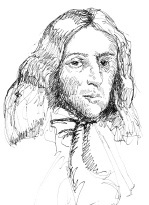

George Berkeley (1685-1753) 1685’te İrlanda, Kilkenny’de doğdu. İngiltere Kilisesi’nde bir rahip oldu ve Bermudalar’daki yerli Amerikalılar için bir okul organize etmeye çalışarak Rhode Island, Newport’ta üç sene geçirdi. Bu girişim başarısızlığa uğradığında, İrlanda’nın Cloyne Piskoposu olarak atandığı İngiltere’ye geri döndü.

Berkeley’in felsefî duruşu, idealizm ve tanrıcılığa olan güçlü bağlılığı ile şekillenmişti. Berkeley için idealizm, maddî bedenlerin olmadığı; sadece tinlerin (spirit), zihinlerin veya ruhların, o ruhlar da fikirlerin (ideas) veya düşüncelerin olduğu görüşüydü. Böylece bir şeyi algıladığımızda, bağımsız bir nesneyi değil, sadece kendi fikirlerimizi algılarız. Bir ruh olmadan veya bir ruh tarafından algılanmadan hiçbir şey var olamaz. Berkeley’in idealizm için temel savunması şuydu: Maddî bir beden hayal etmeye çalışın, örneğin herhangi biri tarafından algılanmayan veya düşünülmeyen bir ağaç. Hayal edemezsiniz, çünkü hayal etme teşebbüsünde bulunduğunuz anda onu düşünüyorsunuz; böylece ağaç birisi tarafından düşünülmüş/algılanmış oluyor.
Tanrı, Berkeley’in idealizminde önemli bir rol oynadı. İdealistlerin karşılaştığı bir çelişki vardır: Eğer tecrübelerimiz tümüyle algımızın bir ürünüyse ve sadece dünyadaki bağımsız nesnelere tepkimiz değilse, o zaman neden hepsi o kadar tutarlıdır? Berkeley, oldukça
ahenkli tecrübelere sahip olmamıza Tanrı’nın neden olduğunu savundu. Tanrı, algılarımızın ve tecrübelerimizin neden o kadar düzenli ve kurallı olduğunu açıklar.
Berkeley, Tanrı’nın varlığının yılmaz bir savunucusu olmasına rağmen, otoriteye, kutsal kitaba veya dinî inanca başvurmadı. Tanrı’ya olan inancın tamamen felsefî zeminlerde meşru çıkarılabileceğini göstermenin yollarını aradı.
EK BİLGİ:
1. Berkeley, suyla çam katranının bir bileşimi olan katran suyunun şifa verici güçlerini savundu. Onuruna, şu satırları içeren bir şiir besteledi:
“Hiç tükenmeyen çamın dopdolu hoyrat suyu!
Sanatın gibi ucuz, erdemlerin ilahî.
(Neler sakladığını) onlara göstermek ve açıklamak için
Çok modern ve çok eski bilgiler gerek,”